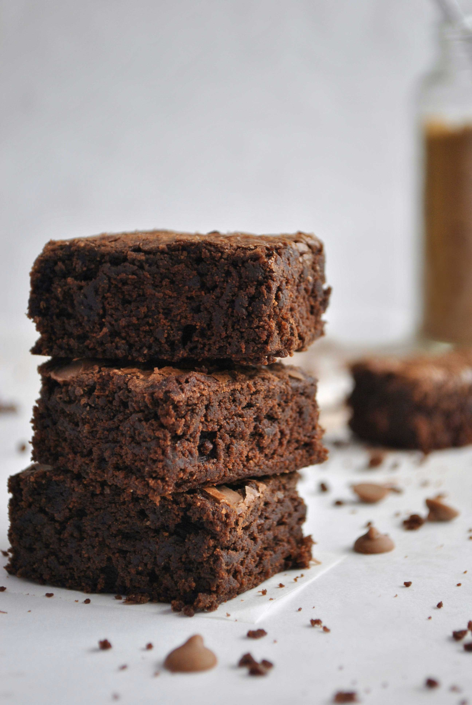

Brownies

Photo by Larissa Uemura on Unsplash
Description
Homemade brownies that take less than 1 hour and only one bowl? Sign me up! Not only are these brownies easy, they are chocolotey and satisfying in a way you can never get from a box.
This recipe was adapted from Smitten Kitchen's Best Cocoa Brownies
Ingredients:
- 10 tablespoons (140g) unsalted butter
- 1 1/4 cups (250g) granulated sugar
- 3/4 plus 2 tablespoons (65g) unsweetened cocoa powder
- 1/4 teaspoon salt
- 1/8 teaspoon cinnamon
- 1/2 teaspoon vanilla extract
- 1 teaspoon coffee liquor
- 2 large eggs cold
- 1/2 cup (65g) all-purpose flour
- 1/4 cup chocolate chips or toffee chips
To Prepare:
- Preheat oven to 325f
- Line bottom and side of 8x8 square baking pan with parchement or foil
- Combine butter, sugar, cocoa, salt, and cinnamon in bowl and microwave for 30 seconds at a time until the butter has melted. Stir the contents each time
- Once the bowl is warm, stir in vanilla and coffee liquor.
- Add egg one at a time, stirring vigorously after each one
- Add flour and stir until you cannot see it
- Stir vigorously for 40 strokes with wooden spoon or spatula
- Add chocolate chips or toffee
- Spread into lined pan
- Bake for 20-25 minutes, and cool before cutting.